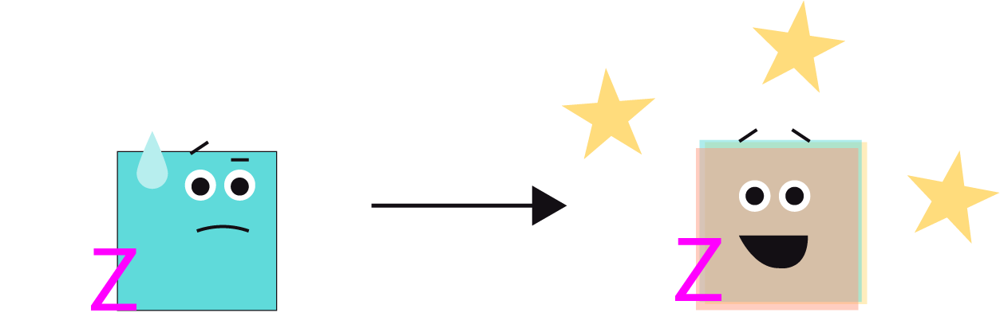
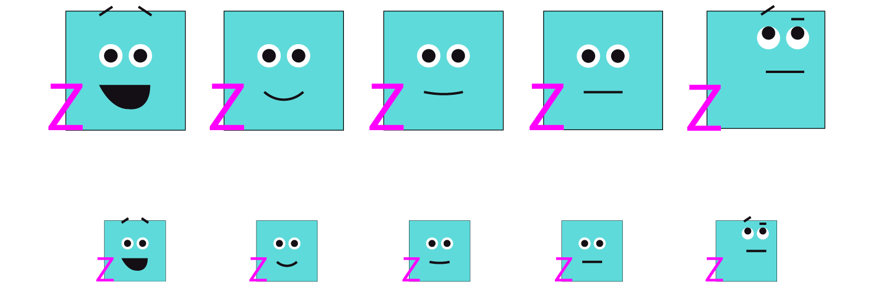

Modular Course Component System
Enterprise LMS Component Architecture & Accessibility Framework
Overview
The Interdisciplinary Studies Department at RMCAD needed an accessible, unified component system to standardize interactive course assets across its 6-course curriculum. To move beyond one-off, disposable asset creation, I engineered a scalable frontend architecture that aligned interactive learning activities directly with core program outcomes—fostering cross-functional, interdisciplinary mindsets while establishing rigorous Web Content Accessibility Guidelines (WCAG 2.1 AA) across every module.
Organization
Rocky Mountain College of Art + Design
Role
Instructional Content Developer
Tools & Tech
HTML5 / H5P / Bootstrap
Adobe Suite /
Screen Reader Testing (NVDA/JAWS)
Timeline
1 Month 2026
Discovery
SME Interviews & Student Experience Audit
Collaborated in ongoing sprint cycles with the Lead Course Subject Matter Expert (SME) to diagnose student engagement barriers across online modules:
Passive Pre-Assessments
Legacy diagnostics relied on text-heavy quizzes that failed to inspire active curiosity or demonstrate practical course value.
Static Visual Barriers
Complex interdisciplinary concepts were presented as flat graphics rather than interactive, manipulatable models.
Asynchronous Friction
Students lacked clear, self-paced progress indicators to guide independent navigation through multi-step assignments.
Disconnected Workflows
Course activities felt isolated, missing an overarching narrative that connected individual artistic majors to cross-functional industry teamwork.
Core Finding
"The Interdisciplinary Studies Department was not fully realizing student engagement or course learning outcomes due to a lack of aligned, accessible multimedia and self-guided opportunities for authentic practice."
Strategic Opportunity
To build genuine interdisciplinary mindsets, course content needed to evolve from passive reading to active, self-guided exploration. The SME's primary goal was to establish an intuitive, highly engaging multimedia environment that empowers students to navigate coursework independently while building real-world problem-solving muscle memory.
Core Problem & Transformation
Transitioning students from passive, siloed learning to active, cross-functional practice that builds real-world professional muscle memory.

The Problem
Art and design students often develop skills in a vacuum—focusing solely on their specialized major (e.g., fashion or graphic design). Legacy course materials exacerbated this isolation through static, non-responsive layouts that lacked engagement and failed WCAG 2.1 AA accessibility standards.
The Solution
An interactive, gamified content framework paired with embedded Module Reflection Planners. This approach empowers students to step into multi-faceted roles—collaborating across creative production, business strategy, and marketing within real-world project simulations.
The Result
A responsive, scaffolded component system utilizing semantic HTML5 and custom ARIA landmarks. This delivered a seamless, 100% WCAG-compliant LMS integration that increased student engagement through meaningful interactive activities while simultaneously improving student independence.
Component Architecture & Technical Execution
Try it out! This inline widget is fully interactive. Test keyboard navigation by expanding the sections (Tab / Space) inside the canvas below. Shifting layouts and multi-tab context switching are eliminated through a unified, WCAG-compliant LMS component structure.
Organize your thinking before writing your final reflection.
Build Your Reflection Outline
Expand each section, organize your ideas, collect evidence, and generate an exportable reflection outline that supports your final written submission.
Assignment Context
In your previous studies, you explored the internal "mindset" of interdisciplinary inquiry. In IS 2000, we shift from how you think to how you act as a professional. This activity asks you to look back at the complex problem you focused on in your introductory course and decide if you want to continue in that territory or pivot to a new social landscape that aligns with your current career goals in Art & Design.
Part 1
The Retrospective
The Reflection: Summarize the complex problem you focused on in IS 1000. If you no longer have access to that work or wish to change direction, explain why a new chosen topic is more relevant to your professional identity today.
The Critique: Based on the MacLeod (2011) reading, identify one "communication barrier" or "epistemic gap" you believe exists between your specific design discipline (e.g., Graphic Design, Illustration, UX, Animation) and the stakeholders or social groups impacted by your topic.
Part 2
Defining the "Professional Collision"
Identify the specific area of the Social World where your professional work intersects with a broader system.
The Silo: Define your primary discipline (e.g., "I am an Interior Designer").
The Collision: Identify a social, ethical, or environmental system where your discipline is needed (e.g., "I am examining how the visual branding of healthcare facilities affects patient trust").
The Ethical Anchor: Using the Medical Sciences Council Guidelines, list one "Professional Responsibility" you have to the public when working within this specific collision.
Part 3
The Impact Formula
Develop a driving inquiry for your work this term using this simple formula:
"How does my work as a [Your Discipline] impact [Specific Social Group] when it comes to [Ethical/Social Issue]?"
Part 4
The Social Impact Brief (Visual/Textual Artifact)
Create a 2-page "Brief" (using a tool like Canva, Adobe, or a professional document layout) that represents your professional "Stance" for this course.
Page 1 (Visual Identity): An image, collage, or original graphic that represents the "Social World" you are entering. Your Impact Formula should serve as the prominent headline.
Page 2 (Systemic Strategy): Using Newell’s (2007) decision-making framework, identify 3 other professional "experts" from outside of Art & Design (e.g., a sociologist, a city planner, an ecologist) that you would need to collaborate with to address this problem.
Bibliography / Citations
<!-- Screen Reader Live Status Region -->
<div id="status-announcer" class="sr-only" aria-live="polite" role="status"></div>
<!-- Module Planner Container -->
<div class="planner-container space-y-6">
<!-- Action Bar -->
<header class="flex justify-between items-center pb-4 border-b border-gray-200">
<span class="badge">IS2000 Module 1 Reflection Planner</span>
<div class="actions space-x-3">
<button type="button" onclick="exportPDF()" class="btn-primary">Export PDF</button>
<button type="button" onclick="resetPlanner()" class="btn-secondary">Reset</button>
</div>
</header>
<!-- Semantic Accordion Pattern -->
<div class="space-y-4">
<!-- Part 1: Retrospective -->
<details class="group focus-within:border-black">
<summary class="flex justify-between cursor-pointer font-mono font-bold">
<div>
<span class="text-xs text-gray-500 uppercase block">Part 1</span>
<span>The Retrospective</span>
</div>
<span aria-hidden="true">▼</span>
</summary>
<div class="p-5 space-y-4 bg-white">
<p><strong>The Reflection:</strong> Summarize the complex problem...</p>
<label for="part1-input" class="sr-only">Part 1 Draft Response</label>
<textarea id="part1-input" class="w-full border p-3" placeholder="Use this space to write a draft..."></textarea>
</div>
</details>
<!-- Part 2: Professional Collision -->
<details class="group focus-within:border-black">
<summary class="flex justify-between cursor-pointer font-mono font-bold">
<div>
<span class="text-xs text-gray-500 uppercase block">Part 2</span>
<span>Defining the "Professional Collision"</span>
</div>
<span aria-hidden="true">▼</span>
</summary>
<div class="p-5 space-y-4 bg-white">
<p><strong>The Silo:</strong> Define your primary discipline...</p>
<label for="part2-input" class="sr-only">Part 2 Draft Response</label>
<textarea id="part2-input" class="w-full border p-3" placeholder="Use this space to write a draft..."></textarea>
</div>
</details>
<!-- Part 3: Impact Formula -->
<details class="group focus-within:border-black">
<summary class="flex justify-between cursor-pointer font-mono font-bold">
<div>
<span class="text-xs text-gray-500 uppercase block">Part 3</span>
<span>The Impact Formula</span>
</div>
<span aria-hidden="true">▼</span>
</summary>
<div class="p-5 space-y-4 bg-white">
<blockquote class="italic border-l-2 border-black pl-3">"How does my work..."</blockquote>
<label for="part3-input" class="sr-only">Part 3 Formula Draft Response</label>
<textarea id="part3-input" class="w-full border p-3" placeholder="Use this space to write a draft..."></textarea>
</div>
</details>
<!-- Part 4: Social Impact Brief -->
<details class="group focus-within:border-black">
<summary class="flex justify-between cursor-pointer font-mono font-bold">
<div>
<span class="text-xs text-gray-500 uppercase block">Part 4</span>
<span>The Social Impact Brief</span>
</div>
<span aria-hidden="true">▼</span>
</summary>
<div class="p-5 space-y-4 bg-white">
<label for="part4-page1-input" class="sr-only">Part 4 Page 1 Draft Response</label>
<textarea id="part4-page1-input" class="w-full border p-3" placeholder="Draft page 1 here..."></textarea>
<label for="part4-page2-input" class="sr-only">Part 4 Page 2 Draft Response</label>
<textarea id="part4-page2-input" class="w-full border p-3" placeholder="Draft page 2 here..."></textarea>
</div>
</details>
</div>
<!-- Bibliography Region -->
<section aria-labelledby="bib-heading" class="border p-5 bg-gray-50">
<h2 id="bib-heading" class="font-bold font-mono">Bibliography / Citations</h2>
<label for="bib-input" class="sr-only">Bibliography Entries</label>
<textarea id="bib-input" class="w-full border p-3" placeholder="Add citations..."></textarea>
</section>
</div>Systems Thinking & Scalability
Built for Reusability
Short-term projects require long-term adaptability. Rather than creating isolated, disposable widgets, I engineered standardized graphic & component libraries that scale across the entire 6-course suite, including graphic building blocks, interactive content templates for recurring content structures like Module Reflection Planners, Flip-cards etc.

Modular component reuse drove a 40% reduction in overall course deployment timelines.
Inclusive Design & Accessibility Standard
Ensuring equitable access through rigorous Web Content Accessibility Guidelines (WCAG 2.1 AA) integration and screen reader verification.
Screen Reader Verification
Engineered dynamic components with role="region" and aria-live="polite" attributes to announce state transitions without interrupting user focus.
Contextual Image Descriptors
Crafted descriptive, curriculum aligned alt-text structures for complex educational graphics by replacing generic filenames with meaningful descriptions that convey real learning content.
Keyboard Navigation & Focus
Guaranteed complete keyboard accessibility with high-contrast focus rings, logical tab sequencing, and explicit key handling (Tab, Space, Enter).
Journey through the IS Course Suite
Mapping the 6-course developmental arc to ensure interactive content and student support components scale consistently. As student mindsets evolve and content knowledge deepen, so does Zara's color.
-
IS1000
Foundation & Collaboration
Shift mindset from thinking strictly about a single specialization to engaging in collaborative interdisciplinary work.
Mindset Shift Specialization → Collaboration -
IS2000
Real-World Application
Explore practical application beyond academic theory: "What would this look like outside of my classroom?"
Mindset Shift Theory → Real-World Context -
IS3000
Problem-Centered Research
To do real work we must solve a problem—formulating actionable research questions and methodology.
Mindset Shift Observation → Active Research -
IS3010
Fieldwork Execution
Transitioning from proposal to active field study: "I completed my research proposal, now what does my fieldwork look like?"
Mindset Shift Proposal → Fieldwork Execution -
IS4000
Intervention Design
Synthesizing field data into tangible solutions: "Now what am I going to do with this info? I’m going to come up with an intervention."
Mindset Shift Data → Actionable Intervention -
IS4010
Professional Presentation
Evolving into a full interdisciplinary professional, presenting validated solutions and findings to the world.
Mindset Shift Student → Interdisciplinary Professional
Explore Standalone Components in the Lab
Want to test isolated builds of the Interdisciplinary Blender Widget or the Accessible Toggle Switch? Interact with functional, screen-reader-verified component sandboxes in my interactive lab.
Project Strengths & Execution
Combining cross-functional teamwork with streamlined technical workflows to deliver reliable, high-impact course assets.
Cross-Functional Collaboration
- Faculty & LXD Alignment: Co-designed component specs with SMEs and LXDs, reducing revision cycles.
- Responsive LMS QA: Audited multi-device viewports across mobile, tablet, and desktop LMS environments to guarantee zero layout shifts (CLS).
- Accessibility Auditing: Conducted hands-on screen reader and keyboard-nav QA testing to verify full WCAG 2.1 AA compliance.
Project Execution Strengths
- Rapid Deployment: Cut asset build timelines by ~40% through modular template structures.
- Frictionless UX: Eliminated multi-tab context switching by embedding interactive scaffolds directly within the course canvas.
- LMS Compatibility: Developed clean, dependency-conscious HTML5/CSS code compatible with enterprise LMS wrappers.
Course & Student Impact
- Active Engagement: Replaced static text and stock graphics with interactive virtual manipulatives, driving engagement and higher completion rates.
- Self-Paced Independence: Enabled asynchronous student progression through scaffolded support structures, reducing the need for direct instructor support.
- Reusable Asset Library: Delivered a modular framework that can be easily reused across future course iterations without custom code.
Need a scalable component system built?
Whether you need to modernize an entire course suite or build custom, WCAG-compliant web components from scratch, let’s collaborate to turn static content into engaging, interactive systems.